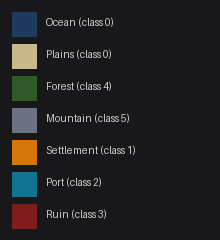
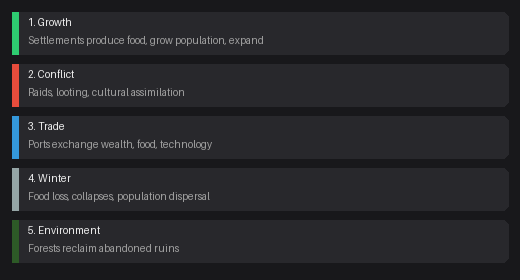
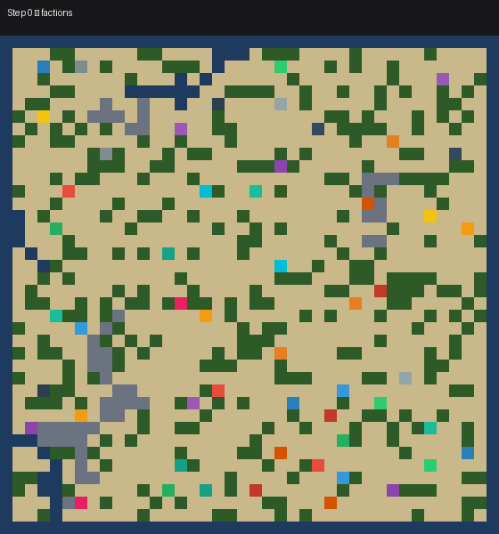
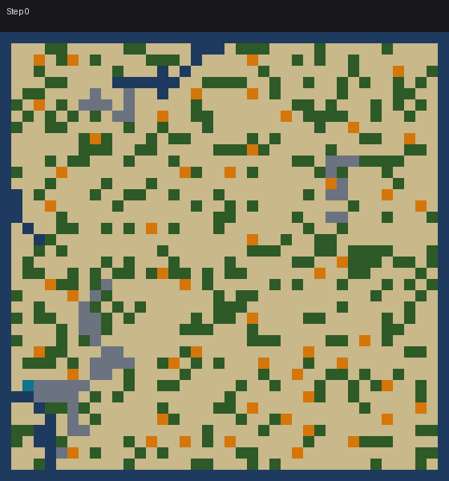
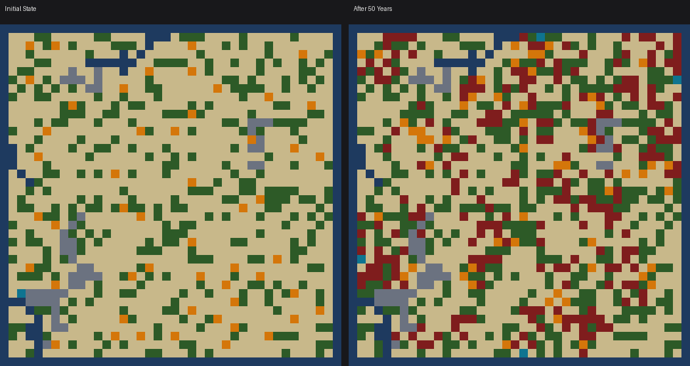
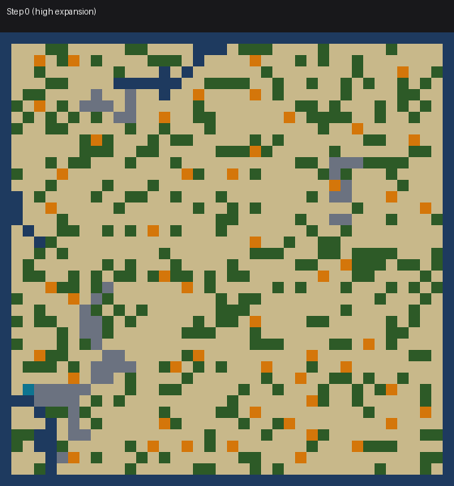

Astar Island Simulation Mechanics
The World
The world is a rectangular grid (default 40×40) with 8 terrain types that map to 6 prediction classes:

| Internal Code | Terrain | Class Index | Description |
|---|---|---|---|
| 10 | Ocean | 0 (Empty) | Impassable water, borders the map |
| 11 | Plains | 0 (Empty) | Flat land, buildable |
| 0 | Empty | 0 | Generic empty cell |
| 1 | Settlement | 1 | Active Norse settlement |
| 2 | Port | 2 | Coastal settlement with harbour |
| 3 | Ruin | 3 | Collapsed settlement |
| 4 | Forest | 4 | Provides food to adjacent settlements |
| 5 | Mountain | 5 | Impassable terrain |
Ocean, Plains, and Empty all map to class 0 in predictions. Mountains are static (never change). Forests are mostly static but can reclaim ruined land. The interesting cells are those that can become Settlements, Ports, or Ruins.
Map Generation
Each map is procedurally generated from a map seed:
- Ocean borders surround the map
- Fjords cut inland from random edges
- Mountain chains form via random walks
- Forest patches cover land with clustered groves
- Initial settlements placed on land cells, spaced apart
The map seed is visible to you — you can reconstruct the initial terrain layout locally.
Simulation Lifecycle
Each of the 50 years cycles through multiple phases. The world goes through growth, conflict, trade, harsh winters, and environmental change — in that order.

Growth
Settlements produce food based on adjacent terrain. When conditions are right, settlements grow in population, develop ports along coastlines, and build longships for naval operations. Prosperous settlements expand by founding new settlements on nearby land.
Conflict
Settlements raid each other. Longships extend raiding range significantly. Desperate settlements (low food) raid more aggressively. Successful raids loot resources and damage the defender. Sometimes, conquered settlements change allegiance to the raiding faction.

Trade
Ports within range of each other can trade if not at war. Trade generates wealth and food for both parties, and technology diffuses between trading partners.
Winter
Each year ends with a winter of varying severity. All settlements lose food. Settlements can collapse from starvation, sustained raids, or harsh winters — becoming Ruins and dispersing population to nearby friendly settlements.
Environment
The natural world slowly reclaims abandoned land. Nearby thriving settlements may reclaim and rebuild ruined sites, establishing new outposts that inherit a portion of their patron's resources and knowledge. Coastal ruins can even be restored as ports. If no settlement steps in, ruins are eventually overtaken by forest growth or fade back into open plains.
Settlement Properties
Each settlement tracks: position, population, food, wealth, defense, tech level, port status, longship ownership, and faction allegiance (owner_id).
Initial states expose settlement positions and port status. Internal stats (population, food, wealth, defense) are only visible through simulation queries.
The World in Motion
Watch a full 50-year simulation unfold — settlements grow, expand, get raided, and some collapse:

Initial state vs. after 50 years of simulation:

With high expansion, settlements rapidly colonise available land:
